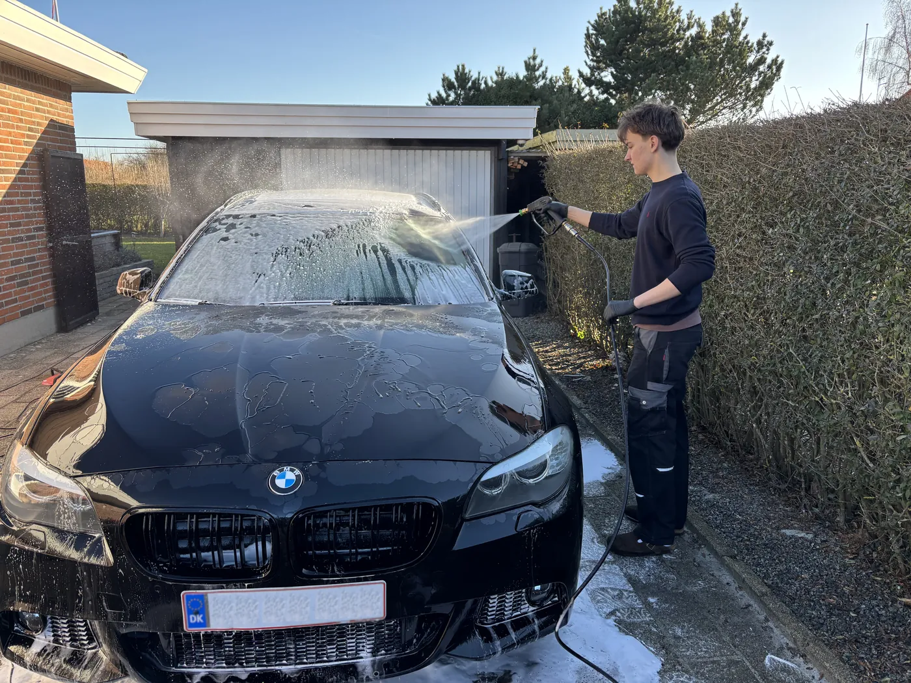

Guide · Af Direkte Detailing · 3. oktober 2026 · 5 min. læsning
Detailing, eller bildetailing, er en grundig rengøring og pleje af en bil, både indvendigt og udvendigt, hvor man arbejder sig igennem bilen del for del i stedet for at give den en hurtig tur. Ordet kommer fra det engelske detail, og det er ret præcist det, det handler om: de steder, en almindelig vask aldrig når hen til, som dørfalserne, sprækkerne omkring instrumentbordet, fælgenes inderside og stoffet i sæderne.
Det er også det ord, der står i vores navn, så her er en ordentlig forklaring på, hvad der ligger i det, hvornår det giver mening, og hvad det koster.

Forskellen på en bilvask og detailing
En tur i vaskehallen fjerner det løse snavs fra lakken på et par minutter, og til hverdag er det helt fint. Børsterne kommer bare ikke ind i fælgene, og kabinen bliver slet ikke rørt. En detailing tager typisk mellem to og fire timer, fordi man gør tingene grundigt og i en bestemt rækkefølge, og fordi indersiden af bilen er en lige så stor del af arbejdet som ydersiden.
| Vaskehal | Detailing | |
|---|---|---|
| Tid | Et par minutter | Typisk 2–4 timer |
| Udvendigt | Lakken med børster eller højtryk | Forvask, håndvask og fælge og dæk hver for sig, og tørring af hele bilen |
| Indvendigt | Ikke med | Støvsugning, paneler, ruder, måtter og dørfalser |
| Sæder og stof | Ikke med | Sæderens, hvis man vælger det |
| Beskyttelse | Nogle gange voks i programmet | Voks, læder- og plastikpleje som egne behandlinger |


Hvad indgår i en detailing
Der findes ikke én fast definition, og to firmaer kan godt mene noget forskelligt med ordet. Hos os dækker det over det her, og det er også det, der ligger i vores Full Detail.
Udvendigt
- Forvask og afspuling, så det grove snavs er væk, før der kommer en vaskehandske på lakken
- Kontaktvask med bilshampoo
- Fælg- og dækrens
- Tørring af hele bilen
Indvendigt
- Grundig støvsugning i alle kroge
- Afpudsning af instrumentbord og alle overflader
- Alle vinduer pudset
- Dybderens af måtter og gummishine på gummimåtter
- Rengøring af dørfalserne

Oven i det kan man vælge behandlinger, der beskytter bilen i stedet for bare at gøre den ren. Alle kan lægges på en hvilken som helst pakke:
| Sæderens | Trækker snavs og lugt op af stoffet, ikke kun de pletter man kan se | 80 kr. pr. sæde |
|---|---|---|
| Voksbehandling | Et lag over lakken mod vejsalt, fugleklatter og insekter | 185 kr. |
| Læderbehandling | Holder læderet smidigt, så det ikke tørrer ud og revner | 125 kr. |
| Plastikpleje | Giver det sorte plast i kabinen farven tilbage | 185 kr. |
| Hundehår | Hår trækkes ud af stoffet i stedet for at blive suget hen over | 149–399 kr. |
Du kan læse mere om hver enkelt på siden om tilkøb.
Hvad med polering og coating?
Søger man på detailing, støder man hurtigt på polering og keramisk coating. Ved en polering sliber man med en maskine et meget tyndt lag af klarlakken væk for at fjerne ridser og hvirvelmærker og få glansen tilbage. En keramisk coating er et hårdt, gennemsigtigt lag, der lægges oven på lakken og beskytter den i lang tid.
Begge dele hører til detailing, men de er ikke en del af vores pakker. Det, vi laver, er rengøring og pleje, og vil du have beskyttelse på lakken, er det voksbehandlingen ovenfor, du skal kigge efter.
Hvornår giver det mening?
- Når bilen skal sælges. Kabinen er det første, en køber sætter sig ind i.
- Når du lige har købt en brugt bil og gerne vil have den forrige ejer ud af den.
- Når vinteren er overstået. Vejsaltet sætter sig i fælge og underkanter, og det er et godt tidspunkt at få voks på lakken igen.
- Når der har været hund eller børn i bilen, for det er sædet og måtterne, der tager det.
- Eller bare når det er så længe siden, at du ikke kan huske, hvornår den sidst var ordentligt ren.
Hvad koster detailing?
Prisen afhænger af, hvor stor bilen er, og hvor meget der skal laves. Det her er vores Full Detail, som tager både indvendigt og udvendigt:
| Bilstørrelse | Full Detail |
|---|---|
| Lille bil | 1.060 kr. |
| Mellem bil | 1.185 kr. |
| Stor bil | 1.299 kr. |
| 7-personers | 1.435 kr. |
Skal der mere til, har vi Premium Full Detail fra 1.560 kr., hvor sæderens, læderbehandling og plastikpleje er med. Vil du kun have den ene side gjort, starter indvendig rengøring ved 685 kr. og udvendig vask ved 375 kr. Er du i tvivl om, hvilken størrelse din bil hører til, kan du slå den op i størrelsesguiden.
Sådan foregår det hos os
Vi kører ud til dig i Svendborg, på Tåsinge og Thurø og laver det hele i din indkørsel eller ved din arbejdsplads. Du skal bare sørge for, at der er adgang til vand og strøm, så har vi resten med. En Full Detail tager typisk mellem to og fire timer, alt efter hvor stor bilen er, og hvordan den ser ud.